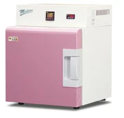
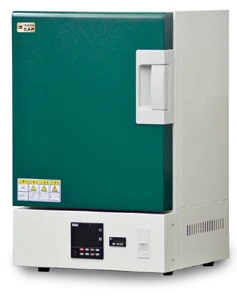
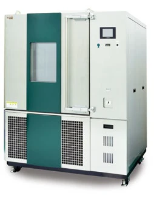

参考画像（正規製品写真は確認待ち）
CATALOG-OUT PRODUCTそよかぜRタイプ
強制循環式恒温試験機
- 内容積
- 27／72／91／150 L
- 温度範囲
- 60～260℃
既存掲載情報。型式や受注可否は確認が必要
現行の総合カタログに掲載されていない製品について、以前の製品情報を手がかりに型式を確認できます。「カタログ外」は販売終了を意味しません。受注生産、修理、保守、代替機種のご相談は、対象機種の情報をお知らせください。
取扱説明書を探す ↗機種について相談 ↗従来の形状や機能を継続使用したい場合は、受注生産を相談できることがあります。部品調達等により対応できない場合もあるため、個別に確認します。

参考画像（正規製品写真は確認待ち）
CATALOG-OUT PRODUCT強制循環式恒温試験機
既存掲載情報。型式や受注可否は確認が必要

参考画像（正規製品写真は確認待ち）
CATALOG-OUT PRODUCT自然対流式恒温試験機
粉末など、気流を避けたい試料に配慮したカタログ外製品
参考画像（正規製品写真は確認待ち）
CATALOG-OUT PRODUCT自然対流式恒温試験機
コンパクトなカタログ外製品
参考画像（正規製品写真は確認待ち）
CATALOG-OUT PRODUCT低温恒温試験機
低温試験向けのカタログ外製品

公式サイト由来参考画像（掲載可否確認待ち）
CATALOG-OUT PRODUCT電気炉
現行販売・部品対応は要確認

参考画像（正規製品写真は確認待ち）
CATALOG-OUT PRODUCT恒温恒湿試験機
型式・サポート可否は要確認
各型式の詳細にも関連資料の入口を設置しています。PDFの適用機種・版はご確認ください。